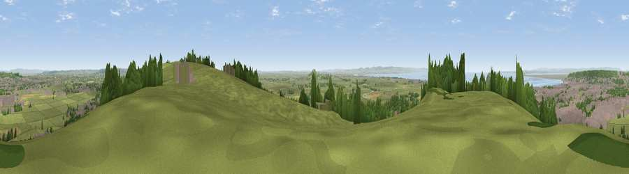

Viewpoint near Bleadon
#1603 in England · top 5% of its area beats it · near BleadonThe view, rendered

A 360° render of this exact spot computed from the terrain model, tree cover and land cover — summer colours, afternoon light, calibrated against photographs of famous viewpoints. Real trees, hedges and buildings will differ in detail.
The panorama
Grey silhouette: terrain skyline in each direction (720 bearings, Earth curvature and refraction included). Dashed green: skyline with trees (+15 m) and buildings (+8 m) as obstacles. Blue strip: how far the ground is visible on each bearing.
Where the view opens
Wedge length = distance to the farthest visible ground on that bearing (vegetation-aware). Rings at 10, 25 and 50 km.
What fills the view
56% grassland · 21% built-up · 12% woodland · 6% water · 5% cropland ·
Angular shares of the visible panorama (visual magnitude), not map area. Landscape diversity 0.55 (0–1 Shannon).
Key numbers
More beautiful places nearby
The staircase of upgrades: each row has a higher view potential than everything closer. Driving times are estimates from straight-line distance, calibrated against real road routing — check an actual route before setting out.
| Place | Direction | Drive | Score |
|---|---|---|---|
| Bleadon Hill [Loxton Hill] | ESE · 3 km | ~7 min | 79.6 |
| Viewpoint near Holford | SW · 26 km | ~41 min | 80.8 |
| Viewpoint near Holford | SW · 26 km | ~42 min | 82.2 |
| Viewpoint near East Quantoxhead | SW · 26 km | ~42 min | 83.1 |
| Viewpoint near Holford | SW · 26 km | ~42 min | 85.9 |
| Viewpoint near West Quantoxhead | SW · 27 km | ~43 min | 87.9 |
| Viewpoint near West Quantoxhead | SW · 27 km | ~44 min | 88.7 |
| Holdstone Hill | W · 73 km | ~96 min | 90.2 |
51.31749, -2.94753 · source: screening · position refined by local search. Computed location — check access rights before visiting.